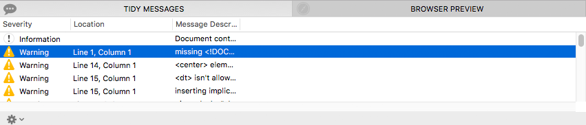
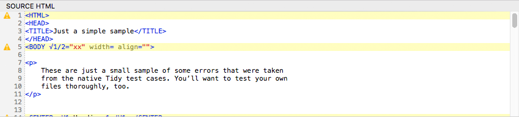

View and Use the Tidy Messages Table
The Tidy Messages table is a critical tool that you will use and should understand. It is what tells you what changes Tidy has made to your source document, and it communicates errors to you that it was unable to fix.
Follow these steps to become acquainted with the Tidy Messages table.
-
Ensure that the tab Tidy Messages is selected in the panel at the bottom of the document window.
-
Observe the messages table, which consists of one or more rows of information indicating data about your document. 
-
Each row will contain a Severity, a Location, and a Message Description, as described in the reference.
-
Clicking on row that contains a location will move the Source HTML view to that location, as this example shows: 